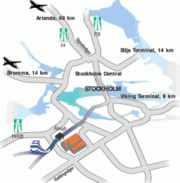

- What is ISCB?
- What is ECCB?
- What is the ISMB conference?
- Why are ISMB and ECCB joined for 2009?
- Who are the ISMB/ECCB 2009 Conference Chairs?
- Who do I contact for information on the conference?
- Where will the conference be held?
- What is the address of the Stockholmsmässan (Stockholm International Fairs)?
- Where is Stockholm?
- Do I need a visa to visit Stockholm?
- Stockholm International Airport
- What is Stockholm's Time Zone?
- What is the Electrical Current?
- What is the International area code?
- What language is spoken in Sweden?
- What language will the conference sessions and materials be presented?
- Climate
- Where do I get more information on Stockholm?
- Hotels
- Where can I find medical information?
- Tipping
- What can I do to ensure my personal safety?
- What is the currency?
- How can I pay to register for ISMB?
- How do I get from the airport to my hotel?
- How do I get from the Airport to convention?
- Where do I register when I arrive?
- What should I do if I lose something?
- Do you have any pictures of Stockholm?
- How do I get to the Stockholm International Fairs from the conference hotels located downtown?
- Is there a map showing the location of the hotels and conference venue?
- What sightseeing opportunities are available in Stockholm?
Q: What is ISCB?
A: The International Society for Computational Biology (ISCB) is the parent organization of the annual conference on Intelligent Systems for Molecular Biology (ISMB). The ISCB is dedicated to advancing the scientific understanding of living systems through computation. The ISCB communicates the significance of our science to the larger scientific community, governments, and the public at large. The ISCB serves a global membership by impacting government and scientific policies, providing high quality publications and meetings, and through distribution of valuable information about training, education, employment and relevant news from related fields. ISCB membership offers many benefits including reduced conference registration fees to several high impact events and reduced subscription prices for a selection of journals of Computational Biology and Bioinformatics. Members are from more than 50 countries and include over 800 students and nearly 500 post doctoral researchers. A member's meeting and a meeting of the Board of Directors for the Society are held annually in conjunction with the ISMB conference.
Q: What is ECCB?
A: The European Conference on Computational Biology (ECCB) is a multi-disciplinary conference that bridges the fields of computer science, mathematics, physics, chemistry and biology by bringing together involved scientists from all over the world. It has a revolving scheme in which, each year, one of the European countries hosts the European conference, often jointly with the national conference on computational biology.
Q: What is the ISMB conference?
A: Intelligent Systems for Molecular Biology (ISMB) is the annual meeting of the International Society for Computational Biology (ISCB). Over the past sixteen years the ISMB conference has grown to become the largest bioinformatics conference in the world. The ISMB conferences provide a multidisciplinary forum for disseminating the latest developments in bioinformatics. ISMB brings together scientists from computer science, molecular biology, mathematics, and statistics. Its principal focus is on the development and application of advanced computational methods for biological problems.
Q: Why are ISMB and ECCB joined for 2009?
A: ISMB/ECCB 2009 will offer the strongest scientific program and the broadest scope of any international bioinformatics conference in 2009. Building on the past success of the joint ISMB – ECCB conferences, the Stockholm conference is designed to cater to variety of disciplines within the bioinformatics community. ISMB/ECCB 2009 will be the largest and most important computational biology event globally in 2009.
Q: Who are the ISMB/ECCB 2009 Conference Chairs?
A: The conference chairs for ISMB/ECCB 2009 are:
- Eugene W Myers, Ph.D., Howard Hughes Medical Institute, Ashburn, VA, USA
- Marie France Sagot, INRIA Grenoble - Rhône-Alpes, and CNRS - University Lyon 1, Villeurbanne, France
- Honorary Chair, Gunnar von Heijne, Stockholm University, Sweden
Q: Who do I contact for information on the conference?
A: You can get information on the conference from:
Steven Leard
ISCB Conferences Director
ISMB/ECCB 2009
Phone: +1-780-414-1663
Fax: +1-780-414-1664
Email: steven@iscb.org
Q: Where will the conference be held?
A: The conference will be held at the in Stockholm International Fairs, Sweden.
Q: What is the address of the Stockholmsmässan (Stockholm International Fairs)?
A: Mässvägen 1, Älvsjö
Stockholmsmässan AB, 125 80 STOCKHOLM
Tel.: +46 (0)8 749 41 00
Fax: +46 (0)8 99 20 44
www.congresstockholm.se
Q: Where is Stockholm, Sweden?
A: Stockholm is located on Sweden's east coast, where Lake Mälaren meets the Baltic Sea. The central parts of the city consist of fourteen islands, all part of the archipelago. The geographical city centre is virtually situated on the water, in the bay Riddarfjärden.
Stockholm Municipality is an administrative unit defined by geographical borders. The semi-officially adopted name for the municipality is City of Stockholm (Stockholms stad in Swedish). As a municipality, the City of Stockholm is subdivided into district councils, which carry responsibility for primary school, social, leisure and cultural services within their respective areas. The City of Stockholm is usually described in terms of its three main parts: Stockholm City Centre (Innerstaden), South Stockholm (Söderort) and West Stockholm (Västerort). www.stockholmtown.com
Q: Do I need a visa to visit Stockholm, Sweden?
A: Sweden has signed the Schengen Treaty, which eliminated the border controls between 15 European countries. The countries are: Belgium, Denmark, Germany, Finland, France, Greece, Ireland, Italy, Luxembourg, the Netherlands, Norway, Portugal, Sweden, and Spain. For visitors traveling from one of these countries, at this time there are no personal controls when entering Sweden. A valid passport entitles EU and North American citizens to a three-month stay in Sweden. Citizens of other countries should check with a Swedish diplomatic representative in their home country.
Q: Stockholm International Airport
A: Stockholm-Arlanda is Sweden’s largest airport and an important hub for both the Stockholm region and Scandinavia − primarily thanks to aviation, with 167 destinations around the world, but also due to its good ground transport services to and from other parts of the Stockholm region.
Q: What is Stockholm’s Time Zone?
A: Sweden conforms to Central European Time, which is one hour ahead of Greenwich Mean Time.
Q: What is the Electrical Current?
A: The normal electric current in Sweden is 220 volts AC in 50 cycles, and plugs and sockets may differ from those in other parts of the world,
so travelers should bring adapters or transformers for electrical appliances such as hairdryers and shavers.
Electronic equipment
Laptop computers that are made to work on both 110 and 220 volts can be used in Sweden with an adapter. For laptop computers working on 110 volts only, transformers are also necessary.
Q: What is the International area code?
A: The area code for Stockholm from abroad is: + 46 1
A: Swedish - Most Swedes speak English.
Q. In what language will the conference sessions and materials be presented?
A. All conference presentations and materials will be presented in English.
Q: What is the climate?
A: Sweden's northerly position has a definite summer advantage in that temperatures are rarely extreme and humidity levels are not high.
Q: Where do I get more information on Sweden?
A: Visit Sweden website at www.visitsweden.com
Q: What are the conference hotels?
A: The ISMB/ECCB organizers will have a selection of hotels available at special discounted rates for conference attendees. Remember most hotels offer
breakfast part of their room rate.
Q: Where can I find medical information?
A: In all cases, except for emergencies, look in the blue pages in the local telephone catalogue (Hospital=Sjukhus, Emergency room=Akutintag).Call 112 for all emergencies
Ambulance, rescue corps, dentist, doctor, information on poison, police, mountain rescue corps, as well as fire department.
Information on poison: 08-33 12 31.
Q: What is the custom on tipping?
A: A gratuity is included in the metered fare of all taxis. Gratuity of 13% is included in all restaurants and bar checks. If the service was really top notch, you can show your appreciation by leaving a little extra. 5% will do fine.
Hairdressers and barber shops. No tips to the owner and the employees really don't expect anything. If you feel the urge, add 10%.
Q: What can I do to ensure my personal safety?
A: Emergency phone calls Dial 112 for emergency assistance from police, fire brigade, ambulance etc. Emergency calls from pay phones are free of charge.
Q: What is the currency?
A: The monetary unit in Sweden is the krona (plural "kronor") and equals 100 öre. Bank notes are printed in values of 20, 50, 100, 500 and 1,000 kronor, coins 50 öre, 1, 5 and 10 kronor.
There is no limit on the amount of Swedish and foreign currency taken into Sweden.
The Euro replaced 12 national currencies in January 2002 as the single currency of these European nations: Belgium, Germany, Spain, France, Ireland, Italy, Luxembourg, the Netherlands, Austria, Greece, Portugal and Finland, with Finland as the single Nordic country participating. Sweden has yet to ratify the Euro treaty.
Q: How can I pay to register for ISMB?
A: Delegates can pay on-line using the following credit cards or mail in a Check. Accepted credit cards are: Mastercard, Visa, Diners Club and American Express.
Q: How do I get from the airport to the Stockholm International Fairs?
A: Stockholm International Fairs & Congress Center is situated in the southwest area of Stockholm. The center is located favorably in terms of transport facilities and can be reached either by car, or by public transport. From the central station you can reach the fair-site by commuter train in 9 minutes. From Arlanda Airport, it takes less than an hour by car or by bus.

Local transport
Taxi
Arriving by taxi, ask for fixed rates to Stockholm International Fairs from either the airport or downtown Stockholm.
Taxi Stockholm »
Taxi Kurir »
Taxi 020 »
Commuter train
The commuter train (SL, Stockholm Transport) from Stockholm Central reaches Älvsjö station in just 9 minutes.
SL »
By car
Take the E4/E20 and follow the signs for Mässan/Älvsjö.
Q: Where do I register when I arrive?
A: Conference Registration is available from Friday, June 26 to Thursday, July 2 at the Stockholm International Fairs.
Q: What should I do if I lose something?
A: A lost and found will be located at the information booth located at the Stockholm International Fairs.
Q: Do you have any pictures of Stockholm?
A. Yes, see this video clip
A: The most convenient method of travel is by train from the Stockholm Central station. A map can be viewed at: http://www.stockholmsmassan.se/common/category.aspx?id=493
Q: Is there a map showing the location of the hotels and conference venue?
A: Yes, a google map can be found
here
Q: What sightseeing opportunities are available in Stockholm?
A: Stockholm has a great deal to see - the following link provides details on some of what is available
http://www.stromma.se/en/Sightseeing/Stockholm/